Конденсаторы МБМ
Конденсаторы МБМ - металлизированные (М) бумажные (Б) малогабаритные (М) конденсаторы постоянной ёмкости в алюминиевом уплотненном цилиндрическом корпусе, накапливают заряд от 0,0 1мкФ до 1 мкФ при напряжении от 160 В до 1000 В. Допустимое отклонение ёмкости в пределах ±10%, ±20%. Предназначены для эксплуатации в цепях постоянного, переменного и пульсирующего тока.
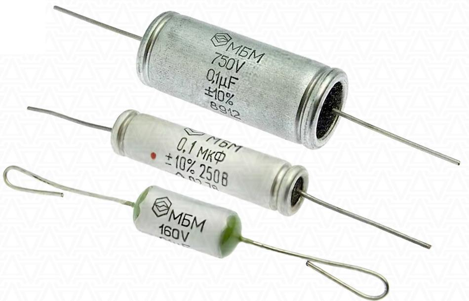
Внешний вид конденсаторов МБМ
Вывода гибкие проволочного аксиального типа. На боковой поверхности корпуса металлобумажного накопителя приведены краткие технические характеристики и маркировка конденсатора, выполненные путем штамповки или нанесением краски.
Монтаж конденсаторов МБМ на плату осуществляется по THT-технологии (выводы монтируются непосредственно в сквозные отверстия печатной платы) с помощью пайки. При изгибе выводов минимальное расстояние от корпуса составляет 2 мм.
Рабочая повышенная температура среды не выше +70°С, пониженная - не ниже -60°С. Предельный тангенс угла потерь 0,015, максимальный ток утечки tgδ - 3 мкА. Наработка при этом достигает не менее 10 000 ч.
Представленные металлизированные бумажные малогабаритные конденсаторы МБМ нашли применение в радиоэлектронной аппаратуре бытового и промышленного употребления, в частности в аудио-акустической аппаратуре.
| Рабочее напряжение | 160 В - 1500 В | |||||
| Диапазон ёмкостей | 0,01 мкФ ... 1,0 мкФ | |||||
| Диапазон рабочих температур | -60°С ... +70°С | |||||
| Допустимое отклонение ёмкости | 10%, 20% | |||||
| Содержание драгметаллов | серебро 0,1955 г | |||||
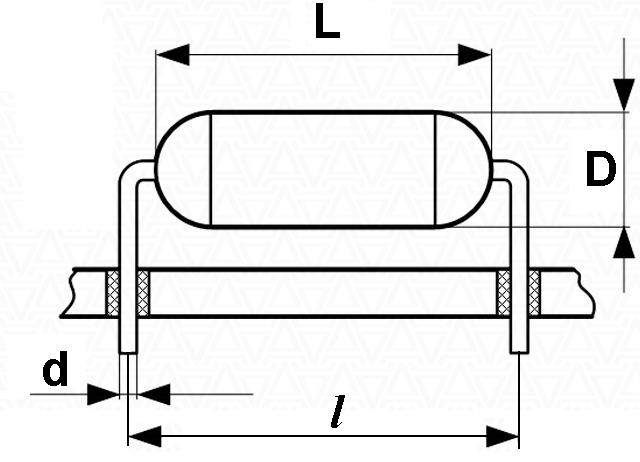
Габаритные и установочные размеры
| Фото | Серия | Напряжение, В | Ёмкость, мкФ | Масса, г | Размеры | |||
|---|---|---|---|---|---|---|---|---|
| L | D | d | l | |||||
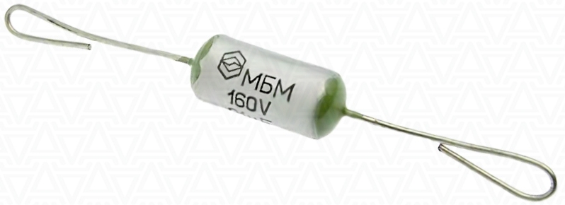 |
МБМ-160В 0.1мкф | 160 В | 0,1 мкФ | 3 г | 22 | 9,3 | 0,9 | |
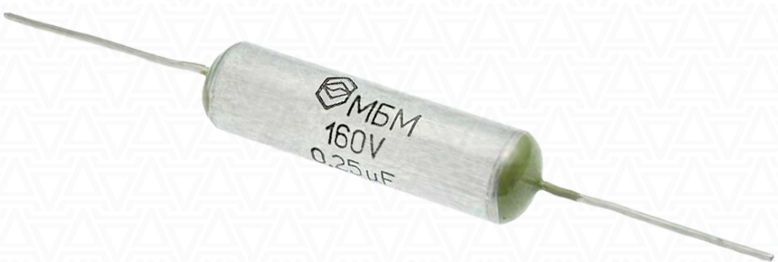 |
МБМ-160В 0.25мкф | 160 В | 0,25 мкФ | 5 г | 36 | 9,3 | 0,9 | |
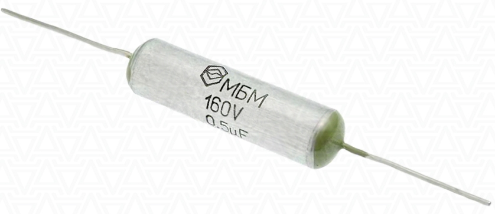 |
МБМ-160В 0.5мкф | 160 В | 0,5 мкФ | 8 г | 36 | 11,8 | 0,9 | |
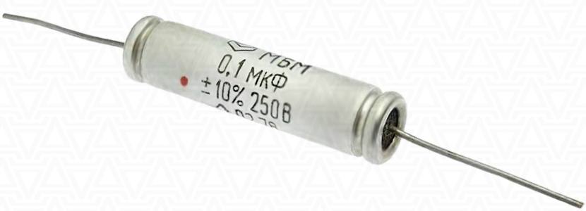 |
МБМ-250В 0.1мкф | 250 В | 0,1 мкФ | 5 г | 38 | 9,3 | 0,9 | |
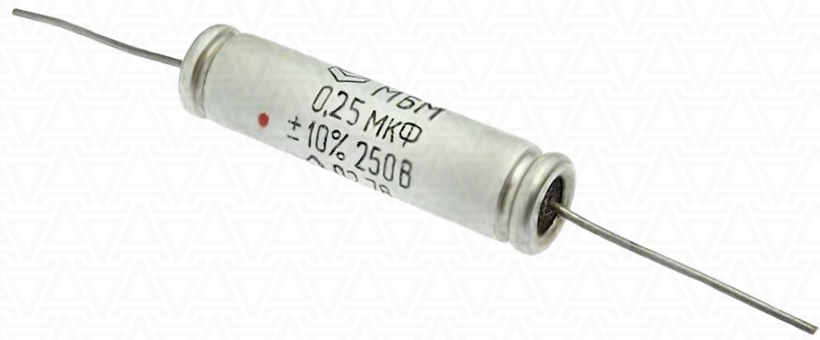 |
МБМ-250В 0.25мкф | 250 В | 0,25 мкФ | 8 г | 38 | 11,8 | 0,9 | |
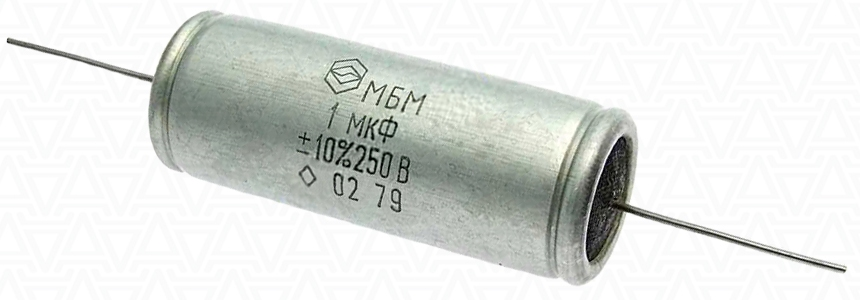 |
МБМ-250В 1мкф | 250 В | 1 мкФ | 20 г | 51 | 18,8 | 0,9 | |
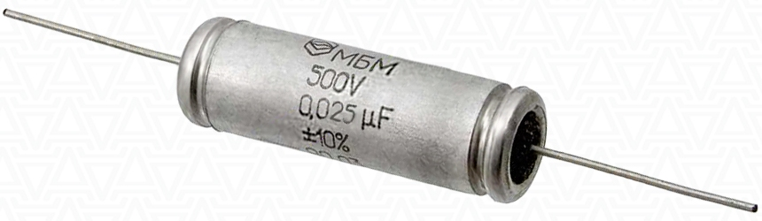 |
МБМ-500В 0.025мкф | 500 В | 0,025 мкФ | 3 г | 38 | 14,8 | 0,9 | |
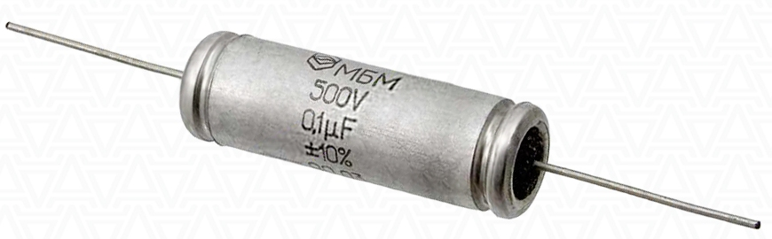 |
МБМ-500В 0.1мкф | 500 В | 0,1 кмФ | 8 г | 38 | 18,8 | 0,9 | |
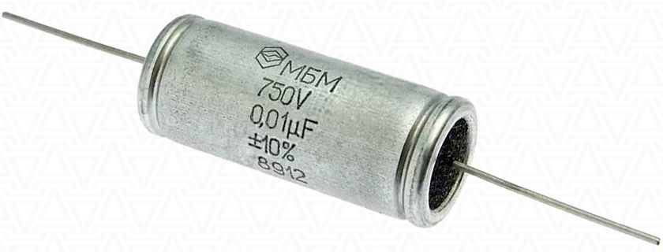 |
МБМ-750В 0.01мкф | 750 В | 0,01 мкФ | 3 г | 25 | 9,3 | 0,9 | |
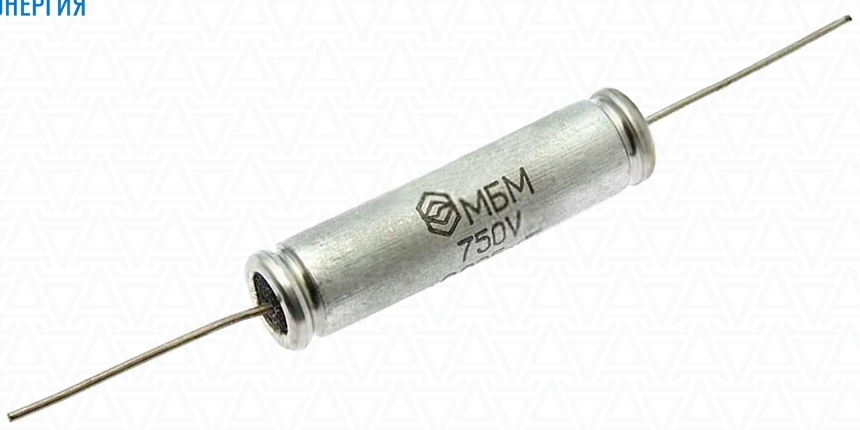 |
МБМ-750В 0.025мкф | 750 В | 0,025 мкФ | 5 г | 38 | 9,3 | 0,9 | |
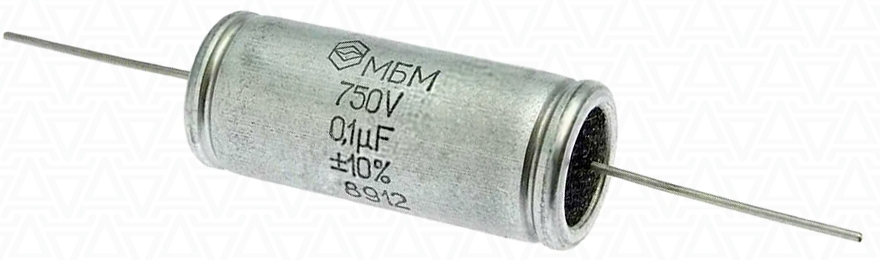 |
МБМ-750В 0.1мкф | 750 В | 0,1 мкФ | 12 г | 38 | 14,8 | 0,9 | |
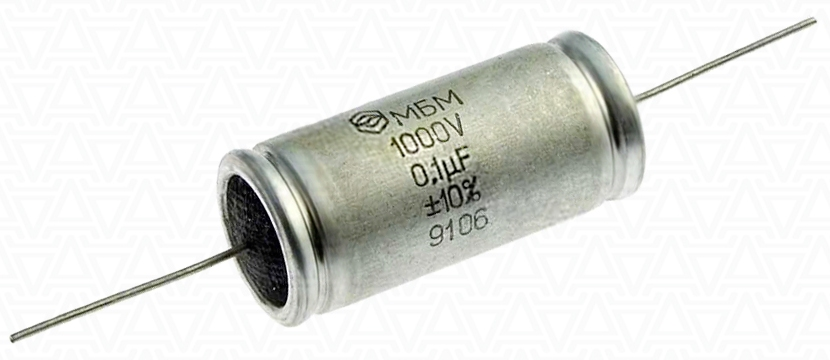 |
МБМ-1000В 0.1мкф | 1000 В | 0,1 мкФ | 15 г | 38 | 16,8 | 0,9 | |
{kind=link}
{kind=link}
{kind=link}
{kind=link}
Маркировка МБМ конденсаторов:
МБМ-1500В 0.025мкф
МБМ - Серия конденсатора: Металлизированный Бумажный Малогабаритный.
1500В - Номинальное напряжение конденсатора: 1500 В.
0.025мкф - Ёмкость конденсатора: 0,025 мкФ.
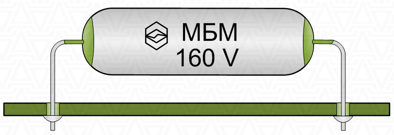
Монтаж конденсатора МБМ